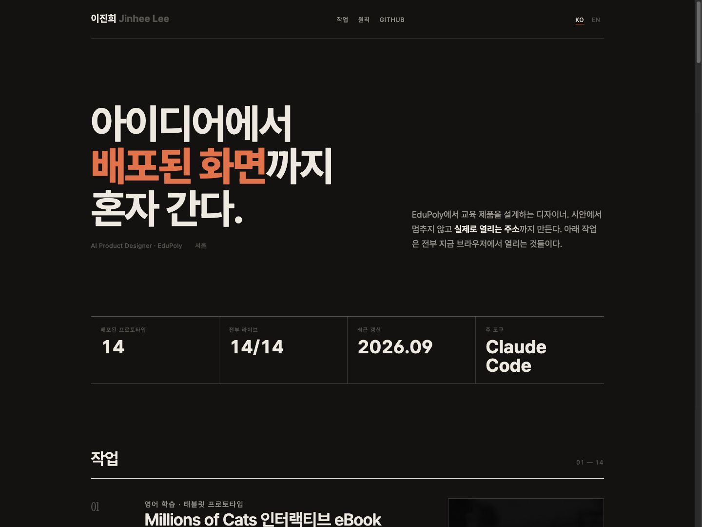

Variant A
Editorial Ink
종이 질감의 웜 뉴트럴 위에 세리프 표제. 프로젝트를 카드가 아니라 목록 행으로 쌓고, 썸네일은 흑백으로 두었다가 호버에서 색이 돌아온다.
- 서체
- Instrument Serif + Pretendard
- 색
- 웜 페이퍼 / 테라코타 액센트
- 구조
- 에디토리얼 인덱스
- 인상
- 차분함, 읽는 사람
이럴 때 좋다 — 케이스 스터디를 글로 길게 쓸 생각이라면. 가장 안전하고 오래 간다. 대신 '기술적으로 뭘 하는 사람인지'는 약하게 보인다.